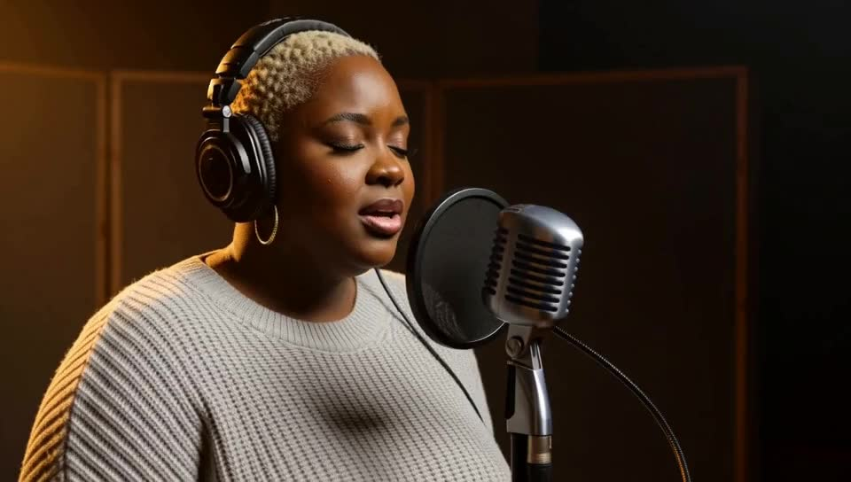
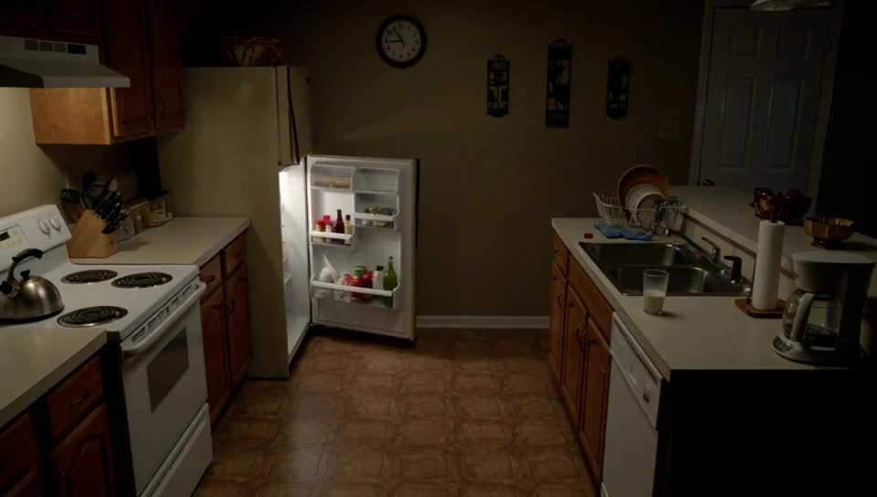
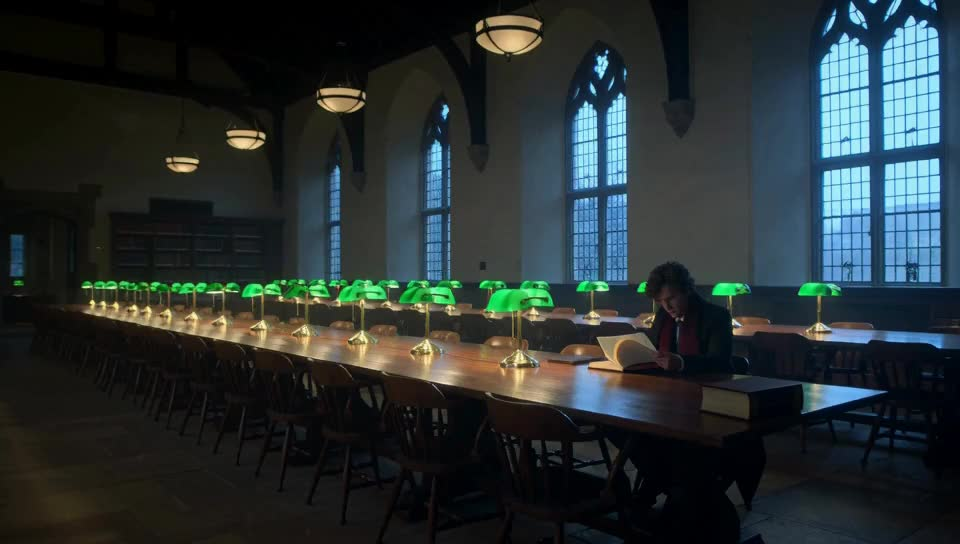
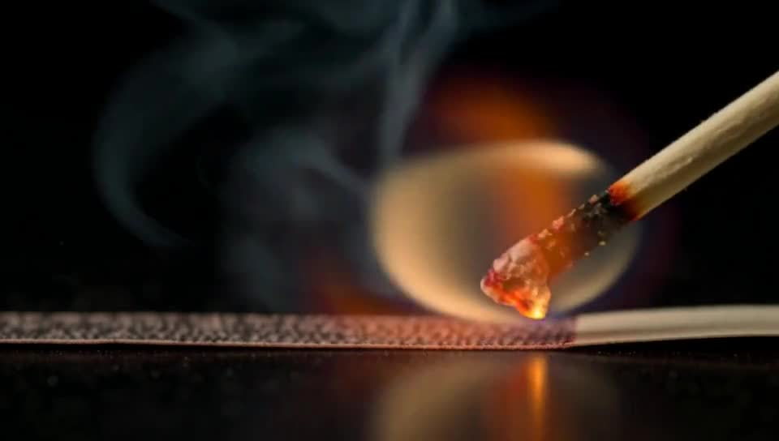
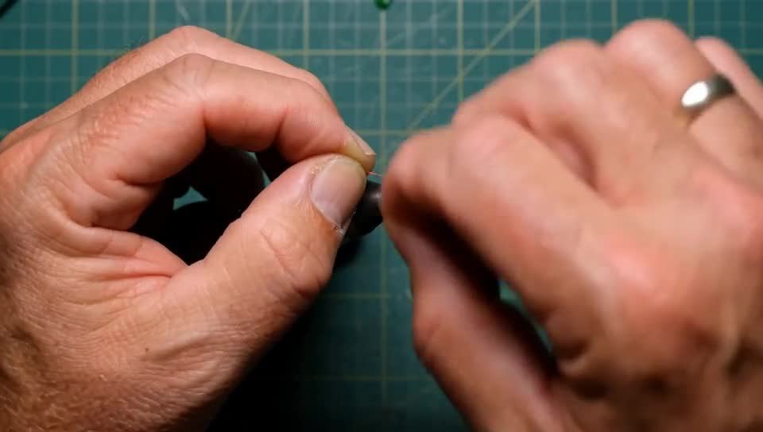
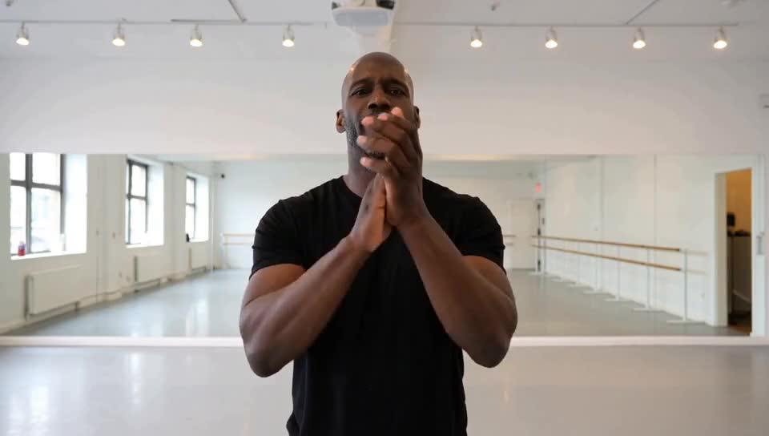

Twelve sampler/LoRA configurations of MiniMax H3 rendered across ten stress-test scenes, 5.17 s each with native audio, all at 960×544 and seed 424242, locally on an RTX 5080. The configs span the base model at 20 steps, larryvrh's Turbo LoRA (EMA and non-EMA) at 8 steps, and lightx2v's 4-step distillation across strength, sampler and audio-shift settings.
Pick a scene to see all twelve side by side, or use the A/B slider to overlay any two of them with a wipe and switch which one you hear.






| tag | LoRA | strength | steps | sampler | sigma shift (video/audio) |
|---|---|---|---|---|---|
| base20 | none | 20 | res_multistep | 12 / 3 (default) | |
| emck8 | minimax_h3_turbo_4step_ema_ckpt500_pruned_comf | 1.0 | 8 | res_multistep | 12 / 6 |
| ck8 | minimax_h3_turbo_4step_ckpt500_pruned_comfyui. | 1.0 | 8 | res_multistep | 12 / 6 |
| lx4-ref | minimax_h3_fl2v_lightx2v_turbo_4step_v0.1_comf | 1.0 | 4 | res_multistep | 12 / 3 (default) |
| lx4-house | minimax_h3_fl2v_lightx2v_turbo_4step_v0.1_comf | 1.0 | 4 | res_multistep | 12 / 6 |
| lx4-ersde10 | minimax_h3_fl2v_lightx2v_turbo_4step_v0.1_comf | 1.0 | 4 | er_sde | 12 / 3 (default) |
| lx4-ref75 | minimax_h3_fl2v_lightx2v_turbo_4step_v0.1_comf | 0.75 | 4 | res_multistep | 12 / 3 (default) |
| lx4-75house | minimax_h3_fl2v_lightx2v_turbo_4step_v0.1_comf | 0.75 | 4 | res_multistep | 12 / 6 |
| lx4-kijai | minimax_h3_fl2v_lightx2v_turbo_4step_v0.1_comf | 0.75 | 4 | er_sde | 12 / 3 (default) |
| lx8-ref | minimax_h3_fl2v_lightx2v_turbo_4step_v0.1_comf | 1.0 | 8 | res_multistep | 12 / 3 (default) |
| lx8-house | minimax_h3_fl2v_lightx2v_turbo_4step_v0.1_comf | 1.0 | 8 | res_multistep | 12 / 6 |
| lx8-kijai | minimax_h3_fl2v_lightx2v_turbo_4step_v0.1_comf | 0.75 | 8 | er_sde | 12 / 3 (default) |
The round-3 grid (10 scenes × 4 configs) was rendered before Kijai's MiniMax audio-sampler fix (bdcb886a, merged 2026-08-06), which reworked how the audio stream is carried through the sampler. Its audio measurements are not directly comparable with the pages above.